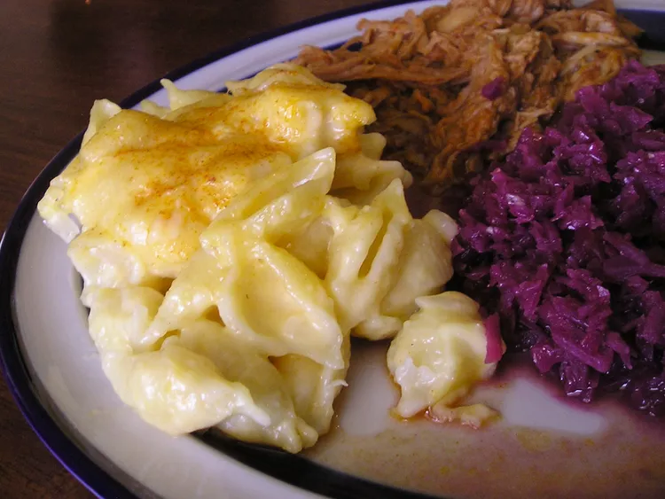

Macaroni and Cheese
Home

Description
This is a recipe for easy baked macaroni and cheese with a bread crumb topping.
Ingredients
- ¾ cup dry bread crumbs
- 2 tablespoons melted butter
- 8 ounces macaroni
- 2 tablespoons butter
- 1 small onion, minced
- 1 tablespoon all-purpose flour
- salt and pepper to taste
- ¼ teaspoon dry mustard
- 1 ½ cups milk
- 2 cups shredded Cheddar cheese
Steps
- Preheat the oven to 350 degrees F (175 degrees C). Grease a 2-quart casserole dish.
- Place bread crumbs into a small bowl and mix well with melted butter; set aside.
- Bring a large pot of lightly salted water to a boil. Add macaroni and cook until al dente, 8 to 10 minutes; drain, then place into the prepared casserole dish.
- While pasta is cooking, melt 2 tablespoons butter in a saucepan over medium heat. Stir in minced onion and cook until onion softens and turns translucent, about 5 minutes.
- Stir in flour, salt, pepper, and dry mustard until incorporated, then pour in milk and bring to a simmer. Cook, stirring constantly, until milk has thickened, about 10 minutes.
- Remove from heat and stir in Cheddar cheese until melted. Pour cheese sauce over macaroni, then sprinkle evenly with buttered bread crumbs.
- Bake in the preheated oven until top is golden and bubbly, about 20 minutes.